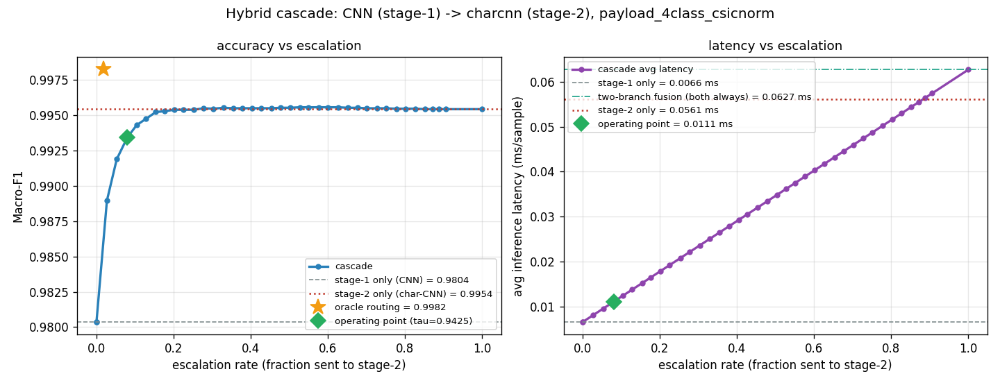
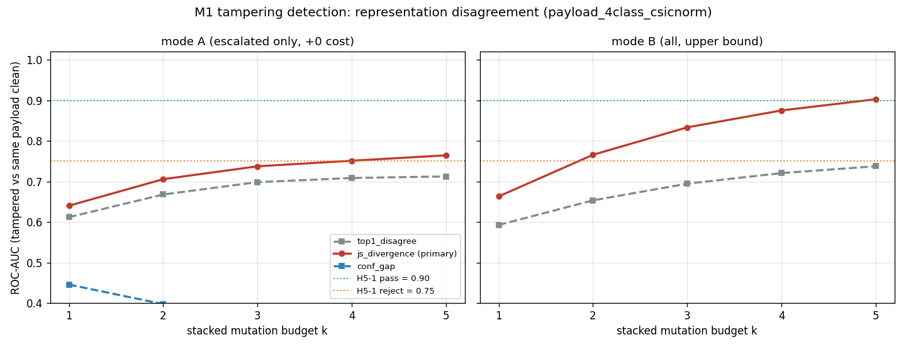
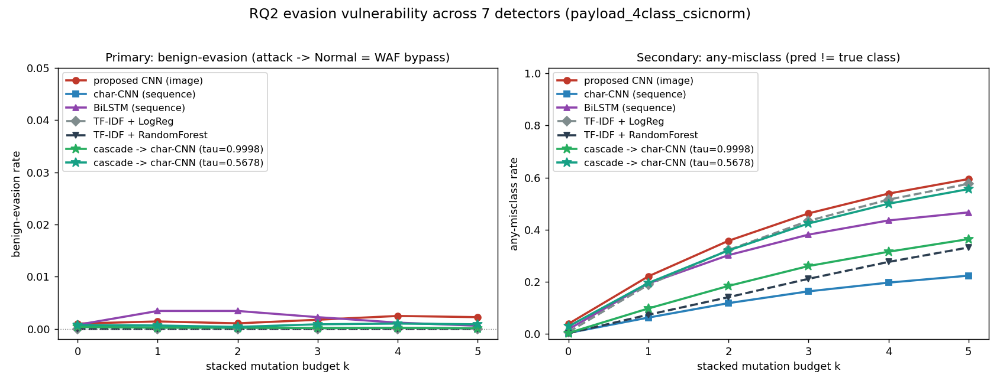

캐스케이드로 주제를 전환한 뒤 진행된 모든 설계 결정·실측·부정 결과를 논문 목차에 바로 얹을 수 있는 하나의 흐름으로 묶었습니다. 각 절은 논문의 어느 장으로 가는지(§12 매핑표), 어떤 문구로 써야 하고 어떤 문구를 쓰면 안 되는지(§10 기여표)까지 함께 적었습니다. 수치는 전부 기존 설계 문서·산출 JSON 에 근거하며 이 문서에서 새로 만든 수치는 없습니다.
절 순서는 마스터 설계 문서 §1.3 이 확정한 논문 서술 순서를 그대로 따릅니다. 번호가 뒤섞여 보이는 것은 RQ ID 를 재배열하지 않기로 못 박았기 때문입니다 (ID 가 파일명에 박혀 있어 재번호는 12개 문서 136곳의 상호참조를 흔듭니다).
RQ1 (음성 결과: 이미지 단독은 진다) → §1
└─▶ RQ5 (그래서 캐스케이드 — 이 논문의 제안) → §2 · §3
├─▶ RQ2 (회피에 얼마나 버티는가 + 비용 공격) → §4
├─▶ RQ3 (방어를 붙이면 어떻게 되는가) → §5 · §6
└─▶ RQ6 (제안 구조에서만 공짜로 얻어지는 능력) → §7
RQ4 (별도 축: 내용 기반 탐지 자체의 경계) → §8
그리고 §9(선행연구 대조) · §10(기여 문구와 금지어) · §11(한계 전체) · §12(논문 목차 매핑과 그림 인벤토리) · §13(재현 절차) 순으로 논문 작성에 바로 쓰는 재료를 붙였습니다.
| Phase | 한 일 | 결과 문서 | 판정 |
|---|---|---|---|
| Phase 10 | 캐스케이드 탐지기 설계·구현·GPU 실측 (RQ5) | docs/09 | 채택 — 제안 모델 |
| Phase 11 | 적대적 방어 학습 A(증강) · B(정규화) + 캐스케이드 편입 (RQ3) | docs/10 | 완료 — H3-4 는 학습형 방어의 패배 |
| Phase 12 | 비용 축 선행연구 전수 대조 → 주장 강도 하향 | docs/12 | F7·M1 하향, M4 강등 |
| Phase 12 / M1 | 표현 불일치 → 회피 시도 탐지 (RQ6) | docs/11 §13 | ⚠️ 보조 지표로 하향 |
| Phase 12 / M4 | 다단 조기종료로 1차 비용 절감 | docs/11 §14 | ❌ 미채택(부정 결과) |
| Phase 12 / M2 | 인코딩 불변 채널 인코더 | docs/11 §15 | 단독 미채택 / 증강 결합 시 채택 |
원래 RQ1 은 "이미지 기반 CNN 이 텍스트 모델과 유사하거나 더 나은 성능을 보이는가"였고, 5-fold CV + paired t-test + Holm 보정으로 낸 답은 아니오였습니다.
| 모델 | clean Macro-F1 | MCC | ms/sample | 처리량 | Pareto 상 위치 |
|---|---|---|---|---|---|
| gray CNN (48×48×1) | 0.9676 | 0.9418 | 0.0066 | 92,466 /s | 정확도 하위 · 비용 최저 |
| RGB CNN (48×48×3) | 0.9804 | 0.9725 | 0.0066 | 81,964 /s | RGB 로 격차를 좁혔으나 여전히 열세 |
| char-CNN (텍스트) | 0.9954 | 0.9940 | 0.0561 | 6,010 /s | 정확도 최상위 · 13.6배 느림 |
| BiLSTM (텍스트) | 0.9838 | 0.9736 | 0.1468 | — | 가장 느림 |
| (참고) 특징 융합형 — 두 브랜치 상시 | — | — | 0.0627 | — | char-CNN 단독보다도 비쌈 |
통계 검정으로 확정한 사실 3개(트랙 payload_4class, 5-fold CV):
이렇게 쓰면 "질문을 슬쩍 바꾼 것"이 아니라 "음성 결과에서 출발한 설계"가 되며, 선행 8편 중 유의성 검정을 한 논문이 0편인 상황에서 오히려 방법론적 강점이 됩니다.
"하이브리드"라고 하면 보통 two-branch 특징 융합을 떠올립니다(이미지 CNN 특징 ⊕ char-CNN 특징 → concat → FC). 그러나 이 구조는 모든 입력이 두 브랜치를 전부 통과하므로 비용이
C_fusion = C_cnn + C_charcnn ( > char-CNN 단독 )
이 되어 애초 목표였던 RGB CNN 의 속도 우위가 사라집니다. 정확도만 얻고 속도는 잃으며, 심지어 char-CNN 단독보다 느립니다(실측 0.0627 ms vs 0.0561 ms). → 채택하지 않습니다. 대신 선택적 실행(cascade) 을 택합니다.
C_cascade = C_cnn + r · C_charcnn ( r = 에스컬레이션 비율 )
r 이 작으면 정확도는 char-CNN 급, 지연은 CNN 급이 됩니다. τ 를 움직이면 정확도–지연 곡선이 그려지고, 양 끝점은 정확히 두 단독 모델입니다 — τ→0 은 얕은 CNN 단독, τ>1 은 char-CNN 단독. 이 성질은 단위 테스트로 고정했고 실측으로도 확인했습니다(τ=0 → esc 0.0000 / F1 0.9676, τ=1.01 → esc 1.0000 / F1 0.9954).
학습은 하지 않습니다. Phase 4/5 에서 이미 학습한 체크포인트 2개를 그대로 조합합니다 → 추가 GPU 학습 비용 0, 그리고 "같은 모델을 배치 방식만 바꿨다"는 인과가 성립합니다.
match-teacher(val Macro-F1 이 char-CNN 이상이 되는 τ 중 에스컬레이션 최소)와
budget(에스컬레이션 ≤ 예산 아래 val Macro-F1 최대) 2종입니다.synchronize() 필수. 모델 순전파 기준이며 전처리는 제외(µs 수준이라 결론 불변).| 1차 | 2차 | τ 규칙 | τ | esc | Macro-F1 | MCC | ms/sample | spd | ovh |
|---|---|---|---|---|---|---|---|---|---|
| gray | char-CNN | match-teacher | 0.9998 | 78.36% | 0.9954 | 0.9940 | 0.0508 | 1.11× | 7.74× |
| gray | char-CNN | budget 10% | 0.7509 | 7.46% | 0.9856 | 0.9756 | 0.0108 | 5.23× | 1.64× |
| gray | char-CNN | budget 5% | 0.5678 | 2.54% | 0.9754 | 0.9579 | 0.0080 | 7.05× | 1.22× |
| gray | BiLSTM | match-teacher | 0.8099 | 9.98% | 0.9831 | 0.9714 | 0.0212 | 6.92× | 3.23× |
| RGB | char-CNN | match-teacher | 0.9971 | 27.73% | 0.9955 | 0.9941 | 0.0223 | 2.52× | 3.32× |
| RGB | char-CNN | budget 10% | 0.9425 | 7.99% | 0.9934 | 0.9907 | 0.0111 | 5.07× | 1.68× |
| RGB | char-CNN | budget 5% | 0.7516 | 2.71% | 0.9890 | 0.9837 | 0.0081 | 6.92× | 1.23× |
트래픽의 8.0%만 2차로 올려 char-CNN 대비 MCC 0.9940 → 0.9907(−0.33pp)에 지연은 5.07배 낮습니다(0.0561 → 0.0111 ms/sample). 융합형(0.0627 ms) 대비로는 5.6배입니다. 정확도를 한 치도 양보하지 않으려면 RGB + match-teacher 가 27.7% 에스컬레이션으로 char-CNN 을 넘어서면서(F1 0.9955 vs 0.9954) 2.52배 빠릅니다.

docs/figures/models/cascade_curve_..._rgb_b0.1_bal.png)| 1차 | oracle esc | oracle Macro-F1 | 실측 게이트가 같은 수준에 쓰는 esc | 과잉 배수 |
|---|---|---|---|---|
| gray | 3.96% | 0.9968 | 78.36% | 19.8배 |
| RGB | 1.87% | 0.9982 | 27.73% | 14.8배 |
확신도(max softmax)는 오답을 15~20배 과잉 포착합니다. 문제는 정확도 상한이 아니라 비용 상한이며, 게이트를 개선하면(엔트로피 · 상위 2개 마진 · temperature scaling) 정확도를 그대로 두고 에스컬레이션만 최대 −25.8pp 줄일 여지가 있습니다. 논문에서는 이를 "개선 여지의 상한을 못 박았다"는 기여(C4)로 쓰고, 동시에 후속 1순위 과제로 명시합니다.
정확도뿐 아니라 비용에서도 RGB 가 이깁니다. char-CNN 급 정확도에 도달하는 데 gray 는 78.4% 를 넘겨야 했지만 RGB 는 27.7% 로 충분했습니다(1차가 정확할수록 넘길 일이 줄어 캐스케이드 전체가 싸집니다). 우려했던 FPR 열세는 운영점에서 재현되지 않았습니다(양쪽 모두 0.0014). gray 의 실패는 규칙 탓이 아니라 1차 모델의 확신도 품질 탓이며 — 이 구조의 성패는 게이트 품질이 좌우한다는 사실을 그대로 보여줍니다(gray match-teacher 의 speedup 은 1.11배로, 캐스케이드를 쓸 이유가 사라집니다).
블랙박스 · 모델 무관 · 의미보존 표면 변형만 사용합니다. feature-space 와 problem-space 를 구분하며
problem-space 가 주 실험입니다 — 주석 삽입 /**/, 대소문자 랜덤화, 공백/탭 치환,
URL/이중 인코딩, 동치 SQL 토큰 치환, XSS String.fromCharCode 등 14종을 누적 k=1..5 로 적용합니다.
생성된 변형은 실제로 동작하는 페이로드입니다.
주 지표는 any-misclass(변형 하 오분류율)입니다. 원래 주 지표였던 benign-evasion(공격 → Normal)은 5모델 전부 ~0(0.0000~0.0022)이라 판별력이 없기 때문입니다(F8). 이 교체는 방어 실험을 돌리기 전에 문서로 고정했습니다.
한계도 같은 문단에 씁니다 — 이 축의 주장은 "표현 안정성을 얼마의 비용으로 살 수 있는가"이지 "WAF 가 더 안전해졌다"가 아닙니다.
| 모델 / 운영점 | any-misclass | benign-evasion | 위치 |
|---|---|---|---|
| char-CNN 단독 | 0.2239 | 0.0001 | 가장 강건(2차 단독) |
| 캐스케이드 gray 1차 τ=0.9998 | 0.3641 | 0.0001 | τ 로 두 단독 사이를 이동 |
| 캐스케이드 gray 1차 τ=0.5678 | 0.5557 | 0.0009 | |
| 캐스케이드 RGB 1차(제안 구성) base | 0.4707 | 0.0001 | 제안 모델의 기준선 |
| gray CNN 단독 | 0.5944 | 0.0022 | 가장 취약(1차 단독) |
| RGB CNN 단독 | 0.5981 | 0.0006 |
기여 C2: τ 하나가 clean 정확도뿐 아니라 공격 하 강건성에서도 두 단독 모델 사이를 연속 이동합니다 (0.364 ↔ 0.556). 즉 §2 에서 주장한 "연속 스펙트럼"이 clean 축에만 성립하는 것이 아닙니다. 다만 τ=0.9998 에서도 char-CNN 단독(0.224)에 못 미치는데, 원인은 넘기지 않은 21.6% 입니다 — 1차가 확신했기에 남은 샘플이지만 변형되면 틀립니다. "확신도가 높다"가 "변형에 강하다"를 뜻하지 않습니다.
| 운영점 | any-misclass | esc (clean) | esc (공격 k=5) | 비용 증가 | 결과 |
|---|---|---|---|---|---|
| τ=0.9998 (match-teacher) | 0.3641 | 78.36% | 79.96% | 1.02배 | 증가 여지 없음 |
| τ=0.5678 (budget 5%) | 0.5557 | 2.54% | 5.50% | 2.17배 | 예산 5% SLA 붕괴 |
비용 기반 공격은 실재합니다. 저에스컬레이션 운영점에서 공격은 정확도를 흔드는 것과 동시에 2차 호출을 2.17배로 늘려 SLA 를 깼습니다. 반대로 이미 78% 를 넘기는 운영점은 증가 여지가 없어 1.02배에 그칩니다 — 즉 비용 공격 표면은 캐스케이드가 싸게 돌아갈수록 커집니다. 완화책으로 에스컬레이션 비율을 운영 지표로 모니터링하고 상한 큐를 두는 방안을 논문 고찰에 씁니다.
학습에 쓴 변형으로 평가하면 "본 적 있는 공격을 막았다"는 자명한 결과가 나옵니다. 변형 14종을 4계열로 묶고 평가 전용(held-out) 계열을 남깁니다.
| 계열 | 변형 | 실측 위력 | S-0 (seen) | S-A (leave-encoding-out) |
|---|---|---|---|---|
| E. 인코딩 | url_encode, double_url_encode, xss_html_entity, xss_decimal_entity | 압도적 (Δ+0.59~0.62) | 학습 | held-out |
| C. 대소문자 | random_case, xss_tag_case | 미미 | 학습 | 학습 |
| W. 공백·주석 | space_to_comment 외 4종 | 미미(1종 예외) | 학습 | 학습 |
| S. 구문 동치 | sqli_logical_equiv 외 2종 | 미미 | 학습 | 학습 |
S-0 은 낙관 상한(방어가 원리적으로 얼마나 줄일 수 있나), S-A 가 진짜 질문(미지의 강한 벡터에 일반화되나)입니다. 두 값의 격차 자체가 결과입니다. 증강은 치환식입니다 — 변형본을 추가(append)하면 공격 클래스만 불어나 FPR 이 방어 효과가 아니라 분포 변화 때문에 움직입니다. 균형화 이후 각 공격 클래스에서 비율 ρ 만큼을 변형본으로 바꿔치기해 train 크기·클래스 비율을 불변으로 둡니다.
F11 — 동요를 만드는 것은 사실상 3종뿐입니다:
space_to_comment +0.635, url_encode +0.584, double_url_encode +0.572.
그중 2종이 S-A 의 held-out 이라 S-A 는 배울 것이 거의 없습니다. 이 점이 아래 결과 전체를 설명합니다.
| 구성 | 캐스케이드(제안) | Δ | 단일 RGB CNN(기준) | Δ | char-CNN | Δ |
|---|---|---|---|---|---|---|
| base (방어 없음) | 0.4707 | — | 0.5981 | — | 0.2239 | — |
| advtrain S-0 ρ0.25 | 0.0318 | −43.89 | 0.1955 | −40.26 | 0.0271 | −19.68 |
| advtrain S-0 ρ0.5 | 0.0287 | −44.20 | 0.2029 | −39.52 | 0.0187 | −20.52 |
| advtrain S-A ρ0.25 | 0.2780 | −19.27 | 0.4693 | −12.88 | 0.1176 | −10.62 |
| advtrain S-A ρ0.5 | 0.4227 | −4.80 | 0.5704 | −2.77 | 0.1383 | −8.56 |
| norm (B, 비학습 대조군) | (미측정) | — | 0.2112 | −38.69 | 0.0650 | −15.89 |
| # | 기준(사전 고정) | 판정 | 근거 |
|---|---|---|---|
| H3-1 | any-misclass ≥10pp 절대 감소 = 효과 있음 | ✅ 효과 있음 | S-0 에서 40~44pp 감소 = 기준의 4배 이상. 단일 split 노이즈(±0.11pp)와 자릿수가 달라 CV 불필요 |
| H3-2 | clean MCC 하락 ≤1pp and FPR 상승 ≤0.5pp | ⚠️ 표현에 따라 갈림 | 캐스케이드 전 구성 통과(MCC 최대 −0.12pp, FPR 0.00pp) · char-CNN 4/4 통과 · 단일 RGB CNN 만 2/4 실패(S-0 ρ0.5 −1.86pp, S-A ρ0.25 −3.81pp · FPR +0.69pp) |
| H3-3 ⭐ | S-A 감소폭 ≥ S-0 감소폭의 50% → "일반화" | ❌ 본 변형 암기(이미지) / ⚠️ 경계선상 충족(텍스트) | 캐스케이드 43.9% · 10.9% / 단일 RGB CNN 32.0% · 7.0% → 미달. char-CNN 54.0%(ρ0.25) · 41.7%(ρ0.5) |
| H3-4 ⭐ | advtrain 이 norm 을 못 이기면 그 사실을 헤드라인으로 | ❌ 학습형 방어의 패배 | 미지 변형 조건(S-A) 대비 norm 이 RGB CNN 0.2112 vs 0.4693/0.5704, char-CNN 0.0650 vs 0.1176/0.1383 로 전부 우세 |
설계 문서가 "advtrain 이 norm 을 못 이기면 그 사실을 헤드라인으로 낸다"고 실험 전에 못 박아 두었고, 실측이 정확히 그 경우였습니다. 8셀을 학습해 얻은 것을, 학습이 전혀 없는 규칙 기반 전처리가 미지 변형에서 더 잘 막습니다. 원인은 F11 과 정확히 맞물립니다 — 동요의 주범 3종 중 2종이 인코딩 계열이므로, 인코딩은 학습이 아니라 정규화로 막는 종류입니다.
단, 공짜는 아닙니다. 이미지 표현에서 정규화 방어는 clean MCC 를 1.04pp 깎아(0.9725 → 0.9621) H3-2 기준을 넘겼고, benign-evasion 도 유일하게 base 보다 올랐습니다 (0.0006 → 0.0016). 텍스트 표현에서는 그 대가가 0 입니다(char-CNN 0.9944, +0.04pp).
| 구조 | clean MCC 하락 | FPR 변화 | 공격 하 에스컬레이션 |
|---|---|---|---|
| 단일 RGB CNN | 최대 −3.81pp | +0.69pp | (해당 없음) |
| 캐스케이드(제안) | 최대 −0.12pp | 0.00pp | 34.97% → 최대 69.52% |
캐스케이드는 1차가 흔들려도 2차 char-CNN 이 받아내므로 정확도를 거의 잃지 않습니다. 대신 1차 확신도가 낮아진 만큼 2차 호출이 늘어 추론 비용이 최대 2배가 됩니다. 방어 효과가 큰 구성일수록 에스컬레이션도 큽니다.
선행연구 전수 대조 결과 두 가지가 드러났습니다. ① 선행 논문들의 정확도 개선폭 기준선이 낮고 (+0.11~1.27pp 를 "surpassing existing benchmarks"로 서술), 8편 중 유의성 검정을 한 탐지 논문은 0편입니다. ② 8편 중 회피/적대적 실험을 한 논문도 0편입니다. 그런데 그 축에서 우리가 가진 것은 아직 "제안 모델도 흔들린다"는 음성 결과뿐이었습니다. → 그래서 캐스케이드에만 성립하는 능력 3안을 시도했습니다.
| 방안 | 무엇을 시도했나 | 판정 | 핵심 수치 | 논문에서의 자리 |
|---|---|---|---|---|
| M1 표현 불일치 | 1·2차 예측 불일치를 회피 시도 신호로 | ⚠️ 보조 지표로 하향 | ROC-AUC 0.764(기준 0.90), 커버리지 35.5%, 추가 비용 0 | RQ6 부분 답 · 기여 C5 |
| M2 인코딩 불변 채널 | %XX·&#NN 해독 후 문자 클래스를 G 채널로 | ⚠️ 단독 미채택 / 증강 결합 채택 | 단독 0.4707 → 0.5552(악화) · 증강 결합 S-A 0.4227 → 0.1833 | RQ3 보강 · 기여 C6·C7 |
| M4 다단 조기종료 | 1차 비용 C_cnn 자체를 낮춰 속도 천장 돌파 | ❌ 미채택 | 연산 18% 생략했는데 시간 +3.3%, speedup 5.07 → 3.99배 | 한계로 정직 보고 |
| (M3) CAM 크롭 | — | 🔵 미착수 | — | Phase 13 후보 |
착안: 적대적 증강이 미지 변형에 실패한 원인(F9)은 F11 입니다 — 동요를 만든 3종 중 2종이 인코딩 계열이고,
S-A 에서 그것이 held-out 이라 학습이 배울 것 자체가 없었습니다. 학습으로 못 얻는 불변성은 구조로 넣습니다.
채널 인코더 레지스트리에 normalized_char_class(약어 nc)를 추가해
R = raw_byte / G = 정규화 문자 클래스 / B = local_entropy 로 둡니다.
R 채널(raw)을 그대로 두는 것이 정규화 방어(B안)와의 결정적 차이입니다 — 원본 뷰와 정규화 뷰를 동시에 보므로
"인코딩을 썼다는 사실" 자체도 신호로 남습니다.
| 구성 | 캐스케이드 cc | 캐스케이드 nc(M2) | Δ | 단일 CNN cc | 단일 CNN nc(M2) | Δ |
|---|---|---|---|---|---|---|
| base (방어 없음) | 0.4707 | 0.5552 | +8.45pp ❌ | 0.5981 | 0.6550 | +5.69pp ❌ |
| advtrain S-0 ρ0.25 | 0.0318 | 0.0410 | +0.92pp | 0.1955 | 0.2025 | +0.70pp |
| advtrain S-0 ρ0.5 | 0.0287 | 0.0179 | −1.08pp | 0.2029 | 0.0749 | −12.80pp |
| advtrain S-A ρ0.25 ⭐ | 0.2780 | 0.1548 | −12.32pp | 0.4693 | 0.3720 | −9.73pp |
| advtrain S-A ρ0.5 ⭐ | 0.4227 | 0.1833 | −23.94pp | 0.5704 | 0.4137 | −15.67pp |
읽는 법이 전부입니다. M2 는 단독으로는 회피를 더 쉽게 만들고(base 두 줄 모두 악화), 적대적 증강과 결합했을 때만 이득을 냅니다. 그리고 그 이득은 미지 변형 조건(S-A)에 몰려 있습니다 — 정확히 F9 가 실패했던 지점입니다.
| 구성 | ρ0.25 | ρ0.5 |
|---|---|---|
| 캐스케이드 cc (기존) | 43.9% | 10.9% |
| 캐스케이드 nc (M2) | 77.9% ✅ | 69.2% ✅ |
| 단일 CNN cc (기존) | 32.0% | 7.0% |
| 단일 CNN nc (M2) | 62.6% ✅ | 41.6% ❌ |
M2 의 전제는 "인코딩 변형의 위력은 바이트 값이 바뀌는 데서 온다"였습니다. 실측이 그 전제를 기각했습니다.
| 변형 | 실제 변형된 비율 | 길이 배율 | any-misclass |
|---|---|---|---|
| space_to_comment | 78.0% | 1.36× | 0.6542 |
| url_encode | 99.9% | 1.44× | 0.6029 |
| double_url_encode | 99.9% | 1.88× | 0.5916 |
| xss_html_entity | 44.7% | 1.12× | 0.0049 |
| random_case | 94.5% | 1.00× | 0.0294 |
위력 있는 변형 3종은 전부 "대다수 샘플을 건드리면서 길이를 1.36배 이상 늘리는" 변형이고, 길이를 보존하는 변형 8종은 전부 0.08 이하입니다. 이미지화는 바이트열을 48×48 래스터에 행 우선으로 깔기 때문에, 길이가 늘면 같은 내용이라도 2차원 배치가 통째로 밀립니다(중앙 길이 267B → 370B). 채널 값을 고쳐도 배치는 못 고칩니다.
| 방법 | 무엇을 되돌리나 | any-misclass |
|---|---|---|
| M2 (인코딩 불변 채널) | 채널 값만 — 길이·배치는 그대로 | 0.6550 |
| B안 norm (입력 정규화) | 텍스트를 디코딩 → 값과 길이·배치 모두 | 0.2112 |
되돌려야 하는 것은 값이 아니라 배치였습니다. 이는 §5.3 의 "인코딩은 학습이 아니라 정규화로 막는 종류"를 한 단계 더 밀어붙인 결과입니다 — 정규화가 이기는 이유는 디코딩 자체가 아니라 디코딩이 길이를 되돌리기 때문입니다.
그런데 왜 증강과 결합하면 이기는가? clean 학습 데이터에서 nc 와 cc 가 다른 픽셀은
0.20%뿐입니다(train 105,598건 기준). 즉 증강이 없으면 모델은 이 채널이 무엇을 하는지 배울 기회 자체가 없고,
공격 시점에는 세 채널이 서로 어긋난 처음 보는 입력이 됩니다(그래서 base 가 오히려 악화).
증강이 들어가야 "인코딩 하에서는 G 채널이 믿을 만한 뷰"라는 것을 학습하고, 그 순간 held-out 인코딩에도 전이됩니다.
→ 불변성은 표현에 넣는 것만으로는 작동하지 않고, 그것을 쓰라고 가르치는 데이터가 함께 필요합니다.
착안: clean 에서는 1·2차의 탐지집합이 완전 일치(F4)하는데, 변형 k=5 에서는
any-misclass 가 char-CNN 0.224 vs RGB CNN 0.598 로 격렬하게 갈립니다. 지금까지 이 격차는
"캐스케이드의 약점"으로만 읽혔습니다. 뒤집으면 잡음(clean)이 거의 없고 신호(변형)가 큰 탐지기입니다.
캐스케이드에 4-class 판정과 별개의 세 번째 출력 tampering_score = D(p₁, p₂) 를 답니다.
모드 A(비용 불변) — 에스컬레이션 부분집합에서만 판정하므로 추가 비용이 정확히 0 입니다.
이것이 M1 의 유일한 기여이며, 주 점수함수(js_divergence) · 주 모드 · 음성 집합 ·
임계값 규칙은 전부 실측 전에 고정했습니다.
| 구성 | k=1 | k=3 | k=5(주) | 커버리지 | clean Normal FPR | 판정 |
|---|---|---|---|---|---|---|
| base | 0.6401 | 0.7374 | 0.7644 | 0.3552 | 0.0301 | H5-1 보조 지표 / H5-2 미충족 |
| 방어(advtrain S-0 ρ0.5) | 0.5522 | 0.5920 | 0.5980 | 0.6532 | 0.0149 | H5-1 기각 / H5-2 미충족 |

docs/figures/attacks/tamper_auc_..._cascade_rgb_bal.png)| τ | 0.878 | 0.964 | 0.993 | 0.997(운영) | 0.9999 | 1.01(=전량) |
|---|---|---|---|---|---|---|
| 커버리지 | 0.092 | 0.162 | 0.277 | 0.355 | 0.644 | 1.000 |
| ROC-AUC | 0.522 | 0.669 | 0.748 | 0.764 | 0.818 | 0.903 |
M1 의 핵심 결론: H5-1 의 0.90 기준을 넘는 지점은 커버리지 100%(=모드 B) 하나뿐입니다(0.9028). 그런데 그 점은 비용이 융합형과 같아져 M1 의 유일한 기여가 사라집니다. → "공짜이면서 효과 있음"은 이번 실측에서 성립하지 않았습니다.
| 조건 | 기준 | 둘 다 | 1차만 | 2차만 | 둘 다 실패 |
|---|---|---|---|---|---|
| clean | detection | 21,865 | 8 | 34 | 0 |
| 변형 k=5 | detection | 21,892 | 2 | 13 | 0 |
| 변형 k=5 | correct | 8,359 | 445 | 8,644 | 4,459 |
detection 기준으로는 변형 하에서도 순증이 13건뿐입니다 — 즉 변형은 공격을 Normal 로 넘기지 못하며
미탐이 아닙니다. 격차는 전부 correct(유형 귀속)에서 나며 2차만 맞춘 것이 8,644건입니다.
→ 논문에는 반드시 "더 많이 탐지한다"가 아니라 "공격 유형을 옳게 귀속한다"로 씁니다.
운영 비용 근거(대응 playbook · 차단 규칙이 유형으로 갈림)를 같은 문단에 인용합니다.
착안: 캐스케이드 비용식 C(r) = C_cnn + r · C_charcnn 에서 지금까지의 모든 논의는 r 만
건드렸고 C_cnn 은 상수로 뒀습니다. 게이트를 완벽히 고쳐도(oracle r=1.87%) 7.29배가 천장이고
그 원인은 C_cnn 이 바닥이기 때문입니다. 1차 CNN 내부에 조기종료 헤드를 달아 그 천장을 깨려 했습니다.
마스킹이 아니라 축소 배치로 구현했습니다(그래야 지연이 실제로 줍니다. 근거는 eval 모드 BatchNorm 이
running stats 를 쓴다는 것이며, 단위 테스트로 고정했습니다).
| 단계 | 1차 MCC | 1차 지연 | 캐스케이드 speedup (budget 10%) |
|---|---|---|---|
| ① 기존 RGB CNN(기준) | 0.9725 | 6.58 µs | 5.07배 |
② cnn_ee, 조기종료 끔 | 0.9554 | 9.93 µs | 4.07배 |
③ cnn_ee, 조기종료 켬(임계값 0.870) | 0.9552 | 10.25 µs | 3.99배 |
match-teacher 에서 에스컬레이션이 27.7% → 90.0% 로 폭증했고
그 운영점의 speedup 은 0.96배 — char-CNN 단독보다 느립니다.
1차 정확도 하락은 C_cnn 뿐 아니라 r 까지 악화시킵니다.같은 가중치로 종료 임계값만 바꿔가며 GPU·CPU 양쪽에서 쟀습니다. CPU 는 깊이에 따라 단조로 줄어듭니다(−56% → −30% → −8.7% → −0.9%) — 축소 배치 구현은 연산을 실제로 생략하고 있으며 구현 결함이 아닙니다. 그런데 GPU 는 채택 지점에서 오히려 느려집니다. 종료 루프의 파이썬 분기가 GPU→CPU 동기화를 강제하고 boolean 인덱싱이 텐서를 새로 만드는데, 94K 파라미터 모델의 배치 1회가 10 µs 남짓인 영역에서는 이 고정비가 지배합니다. 전원 1블록(연산 −91%)에서조차 시간은 −46% 밖에 안 줄어듭니다 — 이 모델은 GPU 에서 연산 병목이 아니라 커널 런치·동기화 병목입니다.
H7-2 는 이 하드웨어에서 어떤 임계값으로도 도달 불가능했습니다.
6.5배가 되려면 C_cnn 을 −53% 해야 하는데, 조기종료의 이론적 바닥(정확도를 완전히 포기한 1블록 CNN)조차
−46% 입니다. 실패는 임계값을 잘못 골라서가 아니라 비용 바닥이 목표 위에 있어서이며, 스윕해도 뒤집히지 않습니다.
논문 서술: "조기종료가 무용하다"가 아니라 "얕은 CNN 1차는 GPU 에서 이미 바닥이라 더 뺄 것이 없다"로 씁니다. 이는 기여 C1(1차가 이미 충분히 싸다)의 근거를 오히려 강화합니다. 선행 연구(ACM SAC 2025 early-exit IDS 등)가 조기종료로 이득을 본 것은 CPU/엣지 배포나 1차가 훨씬 큰 모델(BERT 급)의 영역입니다.
RQ6("1차와 2차의 표현 간 불일치 자체가 회피 시도의 탐지 신호가 되는가")의 답은 부분 답입니다. 추가 비용 0 으로 신호는 나오지만(ROC-AUC 0.764, 커버리지 35.5%) 사전 기준 0.90 에 미달합니다. 보조 지표로만 보고하며, 단일 모델은 원리적으로 이것을 할 수 없다는 점(두 표현을 동시에 유지하는 구조에서만 공짜로 얻어짐)이 제안 모델이 캐스케이드여야 하는 두 번째 이유입니다(첫 번째는 비용).
비용 개선을 헤드라인으로 삼은 캐스케이드 웹공격 탐지 논문이 이미 존재합니다(Tasdemir et al. 2023, SQLi, 20배). 프레이밍이 거의 같고 배수는 저쪽이 큽니다. 숨기지 말고 먼저 인용하고 대조합니다.
| 축 | Tasdemir 2023 | 본 연구 |
|---|---|---|
| 1차/2차 표현 | 텍스트 → 텍스트 (동종) | 이미지 → 텍스트 (이종) ⭐ |
| 라우팅 기준 | 예측 클래스(양성이면 승급) | 예측 불확실성(max softmax < τ) ⭐ |
| 운영점 | 고정 1개 | τ 스윕 연속 곡선, 양 끝점이 두 단독 모델로 수렴(단위 테스트로 고정) ⭐ |
| 과제 | SQLi 이진 | SQLi / XSS / CmdI / Normal 4-class |
| 게이트 품질 | 미분석 | oracle 대비 14.8배 과잉 정량화 ⭐ |
| 회피 강건성 | 없음 | RQ2 / RQ3 전 축 ⭐ |
| 통계 검정 | 없음 | 5-fold CV + Holm 보정 |
| 속도 배수 | 20× (vs BERT) | 5.07× (vs char-CNN) |
라우팅 차이가 만드는 실질적 귀결: Tasdemir 방식은 공격처럼 보이는 트래픽을 보내면 그대로 2차가 호출되어 비용 기반 공격에 구조적으로 더 취약합니다(공격자가 확신도를 조작할 필요조차 없습니다). 우리 확신도 게이트는 1차의 확신도를 떨어뜨려야 하므로 한 단계 더 어렵습니다. 그럼에도 problem-space 변형만으로 2.17배를 달성했습니다. → 논문 서술은 "클래스 기반 라우팅과 불확실성 기반 라우팅은 비용 공격면의 크기가 다르며, 후자가 더 좁지만 0 은 아니다" 로 쓰면 대조와 발견이 한 문단에 들어갑니다.
| 라인 | 대표 연구 | 우리 축과의 관계 |
|---|---|---|
| 이미지 기반 악성코드 탐지 | Nataraj et al., VizSec 2011 ⭐ | 이미지화 계열의 원점. 바이트-플롯 = 우리 R 채널의 근거 |
| 소스코드 이미지화 | VulCNN, ICSE 2022 ⭐ / Appl. Sci. 2025 assembly-RGB | 채널에 구문 정보를 넣는 계열 → G 채널의 근거 |
| 텍스트 기반 웹공격 탐지 | Tadhani et al., Sci. Rep. 14:1803 (2024) | 비교 대상(CNN+LSTM 하이브리드) |
| 저비용 캐스케이드 탐지 | Tasdemir et al. 2023 ⭐ / Sevri & Karacan 2022 / Kutlimuratov et al. 2026 | 🔴 최근접 선행 — 표 19 로 대조 |
| 조기종료 | ACM SAC 2025 early-exit IDS · ACM CSUR 서베이 | M4 의 선행(미채택이지만 관련연구에는 남김) |
| slowdown 공격 | DeepSloth, ICLR 2021 Spotlight ⭐ | 🔴 C3(F7)의 직접 선행 — 주장 하향 근거 |
| 표현 불일치 탐지 | Feature Squeezing, NDSS 2018 ⭐ | 🔴 C5(M1)의 직접 선행 — 주장 하향 근거 |
| 지표 선택 근거 | Technologies 2026 14(1) 54 ⭐ / arXiv:2512.19203 | 불균형 데이터에서 MCC·PR-AUC 를 쓰는 근거 |
| 웹공격 회피 / 포이즈닝 | WAF-A-MoLE / IVul | RQ2 위협모델 · 향후 연구 |
아래 표는 선행 대조 결과 과장을 걷어낸 최종 문구입니다. 논문에는 왼쪽 열을 그대로 쓰고, 오른쪽 열의 표현은 쓰지 않습니다.
| # | 기여 | ✅ 쓸 문구 | ❌ 쓰면 안 되는 문구 |
|---|---|---|---|
| C1 | 표현 이질적 캐스케이드 | "이미지 표현과 텍스트 표현을 잇는 캐스케이드로, 같은 정확도를 5.07배 싸게 얻는다" | "이미지 기반이 더 정확하다" |
| C2 | τ 연속 스펙트럼 | "τ 하나가 clean 정확도뿐 아니라 공격 하 강건성에서도 두 단독 모델 사이를 연속 이동한다(0.364 ↔ 0.556)" | — |
| C3 | problem-space slowdown 공격 | "DeepSloth 가 보인 slowdown 공격이 웹공격 탐지 캐스케이드에서도 성립함을 실측했다. 단 모델 접근 없이, 실제로 동작하는 페이로드 변형만으로 2.17배를 달성했다" | "새로운 공격면을 발견했다" |
| C4 | 게이트 품질의 상한 정량화 | "확신도 게이트는 oracle 대비 14.8배 과잉 승급한다 — 개선 여지의 상한을 못 박았다" | — |
| (C5) | 표현 불일치 회피 탐지 ⚠️ 하향 | "캐스케이드는 이미 2차를 돌리므로 추가 비용 정확히 0(모드 A)으로 회피 시도의 보조 신호를 낸다(ROC-AUC 0.764, 커버리지 35.5%)" | "표현 불일치를 쓰는 것이 새롭다" · "회피 시도를 탐지한다" · "실용적이다" |
| (C6) | 인코딩 불변 채널 + 증강 ⚠️ 조건부 | "인코딩 불변 채널은 단독으로는 듣지 않지만, 적대적 증강과 결합하면 미지 인코딩 변형으로의 일반화를 10.9% → 69.2% 로 끌어올린다(캐스케이드, clean 대가 −0.02pp)" | "인코딩 불변 채널이 회피를 막는다" · "정규화 방어를 대체한다" · "F9 를 해결했다"(→ 부분적으로 뒤집었다) |
| C7 | 인코딩 회피의 작동 원리 진단 | "이미지화 탐지에서 인코딩 회피의 위력은 바이트 값이 아니라 길이 팽창에 따른 2차원 배치 밀림에서 온다 — 값만 되돌린 M2(0.6550)와 길이까지 되돌린 정규화(0.2112)의 대조가 변수를 분리한다" | "길이가 유일한 원인이다"(상관 0.856 은 강한 3점이 주도) |
norm(B안) 판본은 미측정 — M2 vs B안의 캐스케이드 수준 직접 대조는 불가능하며, 위 비교는 단일 RGB CNN 기준이다.| 논문 장 | 내용 | 이 문서 | 근거 |
|---|---|---|---|
| 1. 서론 | 배경 · 문제정의 · 기여 C1~C7 | §10 | 마스터 §11 |
| 2. 관련 연구 | 이미지화 탐지 / 텍스트 웹공격 탐지 / 캐스케이드·조기종료 저비용 탐지(신설) / WAF 우회 · adversarial ML · slowdown | §9 | docs/12 |
| 3. 제안 방법론 | 이미지 변환(RGB 채널) · 캐스케이드 구조와 τ · 공격/방어 설계 | §2 | docs/09 §2·§3 |
| 4. 실험 환경 | 데이터셋 · 구현 · 하이퍼파라미터 · 지연 측정 프로토콜 · lr 함정 | §2.2 · §1.2 | docs/09 §3.3, docs/08 §9.1 |
| 5. 실험 결과 | RQ1 → RQ5 → RQ2 → RQ3 → RQ6 순 | §1 · §3 · §4 · §5 · §6 · §7 | docs/04·09·10·11 |
| 6. RQ4 | 내용 기반 탐지의 경계(별도 장 또는 절) | §8 | docs/06 |
| 7. 결론 · 한계 · 향후 연구 | 한계 13건 + 후속 과제(게이트 개선 · 배치 불변 이미지화 · 적응형 공격) | §11 | docs/11 §16.3 |
| 논문 위치 | 그림 | 파일 |
|---|---|---|
| 3장 | 페이로드 이미지화 샘플(RGB 3채널) | imaging/payload_4class_csicnorm_samples_text_raw_48_rgb.png |
| 3장 / 6장 | 인코딩 불변 채널(nc) 샘플 | imaging/payload_4class_csicnorm_samples_text_raw_48_rgb-rb-nc-le.png |
| 5장 RQ1 | 5-fold CV 모델 순위(MCC) | models/cv_ranking_mcc.png |
| 5장 RQ5 | 캐스케이드 정확도/지연 곡선(대표 운영점) | models/cascade_curve_..._rgb_b0.1_bal.png |
| 5장 RQ5 | 캐스케이드 혼동행렬 | models/cm_..._cascade_raw_rgb_b0.1_bal.png |
| 5장 RQ2 | 모델별 회피 비교 (캐스케이드 2점 포함) | attacks/evasion_compare_payload_4class_csicnorm.png |
| 5장 RQ2 | 누적 변형 예산별 회피율(제안 구성) | attacks/evasion_stacked_..._cascade_rgb.png |
| 5장 RQ3 | 방어 arm 회피율(S-0 / S-A × ρ) | attacks/evasion_stacked_..._cascade_rgb_def-advtrain_*.png |
| 5장 RQ3 / 6장 | M2 채널 방어 arm 회피율 | attacks/evasion_stacked_..._cascade_rgb-rb-nc-le_def-advtrain_*.png |
| 5장 RQ6 | tampering 판별력 · 커버리지 τ 스윕 | attacks/tamper_{auc,coverage}_..._cascade_rgb_bal.png |
| 6장 RQ4 | 엔트로피 스윕(평문 → 인코딩 → XOR → AES) | rq4/entropy_sweep_payload_4class.png |

docs/figures/attacks/evasion_compare_payload_4class_csicnorm.png)데이터·산출 JSON 은 용량 때문에 .gitignore 대상이며 재생성으로 확보합니다.
학습 GPU 는 1대뿐이므로 순차 실행이 원칙입니다.
# 0) 데이터 재생성 (seed=42 결정론, 인자 없이 전체 실행)
python src/data/preprocess.py
python src/imaging/build_image_dataset.py --track payload_4class_csicnorm --channels rgb
# 1) 두 단계 모델 학습 (캐스케이드는 재학습하지 않는다)
python src/models/train.py --model cnn --track payload_4class_csicnorm --balance --channels rgb
python src/models/train.py --model charcnn --track payload_4class_csicnorm --balance
# 2) 캐스케이드 평가 — τ 를 val 에서 확정 → test 1회 적용
python src/models/cascade.py --track payload_4class_csicnorm --balance --channels rgb
python src/models/cascade.py --track payload_4class_csicnorm --balance --channels rgb \
--select budget --budget 0.10 # 대표 운영점
# 3) 회피 실험 (RQ2) — 같은 공격·같은 파이프라인, 대상 모델만 교체
python src/attacks/run_evasion.py --model cascade --track payload_4class_csicnorm --channels rgb
python src/attacks/compare_evasion.py --track payload_4class_csicnorm
# 4) 방어 (RQ3) — 적대적 증강 8셀 + 정규화 방어 2셀
for SPLIT in S0 SA; do for R in 0.25 0.5; do
python src/models/train.py --model cnn --track payload_4class_csicnorm --balance \
--channels rgb --defense advtrain --mutation-split $SPLIT --aug-ratio $R
python src/models/train.py --model charcnn --track payload_4class_csicnorm --balance \
--defense advtrain --mutation-split $SPLIT --aug-ratio $R
done; done
# 5) M1 표현 불일치 (RQ6) — 새 학습 0, 실행당 약 90초
python src/eval/run_tamper.py --track payload_4class_csicnorm --channels rgb
# 6) M2 인코딩 불변 채널 — npz 재빌드 → 재학습 → 회피 재평가
python src/imaging/build_image_dataset.py --track payload_4class_csicnorm \
--channels rgb --rgb-encoders raw_byte,normalized_char_class,local_entropy
# 커밋 전 필수 (~3초, GPU 불필요)
python -m pytest tests/ -q
| # | 내용 | 현재 권고 |
|---|---|---|
| G6 | RQ4b(USTC 흐름 트랙) 처리 방침 — F1 0.9999 포화로 판별력 없음 | 부록 강등 또는 host 단위 분할 재실험. 후자는 GPU 시간이 추가로 필요합니다. |
| — | FE(F1 Efficiency) 지표 채택 여부 — Tasdemir 2023 의 지표로 우리 캐스케이드를 평가하면 대조가 가장 깔끔해집니다. 우리는 τ 스윕이 있어 α 별 최적 τ 이동까지 그릴 수 있습니다(저쪽은 고정 운영점이라 불가). | 채택 시 metrics.py 한 곳만 수정하면 됩니다. |
| — | H6-1 경계 밴드(단일 CNN ρ0.5 = 41.6%)의 5-fold CV 재판정 여부 | 캐스케이드 결과(69.2% · 77.9%)만으로 주장하면 불필요합니다. |
| — | 캐스케이드 norm(B안) 판본 측정 여부 — 1·2차 정규화본 조립 + τ 재선택 필요 | M2 vs B안을 캐스케이드 수준에서 대조하려면 필요합니다. |
| — | Phase 13 후보 — 배치 불변 이미지화(길이 정규화 리샘플링). §6.2 의 진단이 옳다면 다음 수는 채널이 아니라 이쪽입니다. | 졸업 일정에 따라 판단. |
이미지화는 더 정확하지 않습니다. 이 논문은 그 음성 결과에서 출발해, 이미지 표현의 유일한 실질 우위인 비용을 텍스트 모델의 정확도와 잇는 구조(캐스케이드)를 제안하고, 그 구조가 열어 준 새로운 공격면(지연)과 새로운 방어 대가(지연)를 실측했습니다. 시도한 확장 3안 중 2안은 부정 결과이며 그대로 싣습니다. 남은 하나(M2)는 이 프로젝트에서 가장 아팠던 음성 결과를 조건부로 뒤집었고, 그 실패 과정에서 "인코딩 회피의 위력은 값이 아니라 길이·배치에서 온다"는, 이미지화 탐지 계열 전반에 적용되는 진단을 얻었습니다.